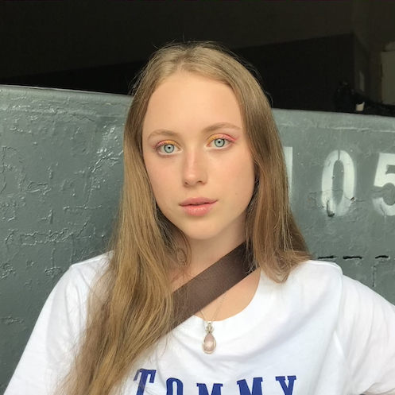

A bit about me
Hi and Welcome to my website! My name is Aleksandra Kovaleva and I am a first year Artificial Intelligence and Computer Science student.
I haven't always wanted to do Computer Science. In fact, my career path was so uncertain, that at first, I wanted to be a Landscape Designer, then I wanted to study economics in Germany and then, when I was In year 12, I decided that is still not what I want to do.
So I spent many days trying to figure out the route I wanted to go, until I managed to get work experience at GraphCore - an AI company that develops software and processors for Machine Learning. After a week of shadowing and looking at their inner processes I felt like that was the path I wanted to take. The exciting opportunities of the field seemed extremely enticing and with all of the possible revolutionary ideas - it seemed like the perfect place for me.
As I was missing Maths A-level, I had to take a foundation year - which is what brought me to the Sheffield University. Now, two years later after that week at GraphCore, I finally am on the right path. So let me tell you a bit more about my course…